设计
不管你是否使用HTTL，都欢迎看一下此设计文档，可能对你设计上有帮助，因为设计理念是相通的。
类关系
模型划分原则
按实体域，服务域，会话域划分。
不管你做一个什么产品，都一定有一个被操作的主体，比如：服务框架管理的Service，任务框架管理的Task，Spring管理的Bean等，这就是实体域。
即然有被操作者，就一定有操作者，它管理被操作者的生命周期，发起动作，比如：服务框架的ServiceInvoker,，任务框架的TaskScheduler，Spring的BeanFactory等，这就是服务域。
服务域发起动作，在执行过程中，会有一些临时状态需要存储交换，比如：Invacation，Execution，Request等，这就是会话域。
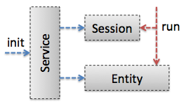
相应的，在HTTL中：
- Engine 为服务域
- 它是API的入口，并负责实体域Template的生命周期管理，它是Singleton单一实例的，加载后不可变，所以是线程安全的，它的初始化过程较重，请复用单例。
- Template 为实体域
- 代表着被操作者，它是Prototype原型实例的，即每个模板产生一个实例，加载后不可变，同样也是线程安全的，模板变化后，将产生不同的实例，而不改变原实例。
- Context 为会话域
- 持有操作过程中的所有可变状态，它是ThreadLocal线程内实例的，即不和其它线程竞争使用，所以也是线程安全的，请不要跨线程传递，它的初始化过程很轻量，每次模板执行前都新建实例，执行完即销毁。
这样划分的好处是，职责清晰，可变状态集中，每个域都是无锁线程安全的，保证在大并发下，不会降低系统的活性。
这些核心领域模型也就是HTTL的API(Application Programming Interface)，它是HTTL暴露给用户的最少概念，也就是上面类图中的第一列。
扩展点组装原则
按“微核+插件”体系组装。
但凡有生命力的产品，都是在扩展性方面设计的比较好的，因为没有哪个产品可以覆盖所有需求，对于开源软件尤其如此。
所以，产品只有具有良好的扩展性，允许用户或第三方参与进来，进行二次开发，才能保持生命力。
怎么样的扩展性才是最好的？通常来讲，就是没有任何功能是硬编码的，所有的功能都可被用户替换。
那要如何才能做到这样？一个重要的原则就是：平等对待第三方。
也就是凡是原作者能实现的功能，第三方也要能够在不改变源代码的前提下实现。
换言之，原作者应把自己也当作扩展者，自己添加功能时，也要用第三方扩展者同样的方式进行，而不要有特权。
要做到这一点，就需要一个良好的框架支撑，“微核+插件”是一个不错的选择，Eclipse, Maven等知名软件都采用该体系。
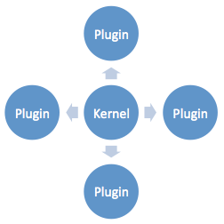
什么是“微核+插件”？微核，即最小化核心，内核只负责插件的组装，不带任何功能逻辑，所有功能都由可替换的插件实现，
并且，组装过程应基于统一的规则，比如基于setter注入，而不能对不同插件硬编码组装，这样可以确保没有任何功能在内核中硬编码。
比如：Spring, OSGI, JMX, ServiceLoader等都是常见的微核容器，它们负责基于统一规则的组装，但不带功能逻辑。
当然，如果你不想带这么重的框架，也可以自行实现，HTTL就采用自行实现的httl.util.BeanFactory作为组装微核。
在Engine.getEngine()中调用了BeanFatory.createBean(Engine.class, properties)，
其中，properties即为httl.properties配置，BeanFatory基于setter方法，递归注入所有对象的属性。
比如：httl.properties中配置了parser=httl.spi.parsers.CommentParser，
而DefaultEngine中有setParser(Parser parser)方法，就会被注入，并且Parser本身的属性也会递归注入。
既然非功能性的插件组装过程，可以由微核框架来完成，那功能性的组装怎么办呢？
我们应该把功能性的组装过程也封装成插件，即让大插件组装小插件，形成级联组装关系。
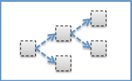
比如，HTTL的入口类Engine的实例也是一个插件，它负责模板的缓存，加载，解析的总调度，即你可以替换DefaultEngine实现。
只需在httl.properties中配置：engine=com.your.YourEngine，可以将现有Parser等SPI注入你的Engine。
这些插件的接口，也就是HTTL的SPI(Service Provider Interface)，它是HTTL暴露给扩展者的最小粒度的替换单元，也就是上面类图中的第二列。
分包原则
按复用度，抽象度，稳定度分包。
- 复用度：
- 每种用户所需用到的类，就是同一复用粒度的，比如：使用者和扩展者，这样可以减少代码干扰，以及最大化复用。
- 稳定度：
- 被依赖包和依赖包的占比，如果一个包依赖很多包，那别的包变化都会引起它跟随变化，所以它就不稳定，反之即稳定， 保持被依赖者总是比依赖者的稳定度高，形成金子塔关系，这样可以防止不稳定性传染，比如a包只依赖3个包，而b包依赖10个包，那就不要让a包去依赖b包。
- 抽象度：
- 包中抽象类个数占比，比如包中有10个类，其中3个为抽象类(包括接口)，则抽象度为3/10， 保持包的稳定度和抽象度成正比，即把抽象类(包括接口)放到稳定的包中，把具体实现类放到不稳定的包中，这样可以保持每层都有足够的扩展性。
稳定度与抽象度关系如下图：
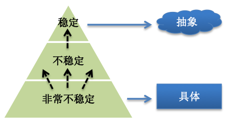
也就是分包应该如下：
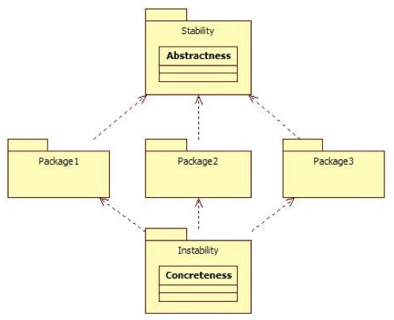
其中上面那个包不依赖其它包。所以它很稳定，应尽量把抽象类或接口放在这一层，
而下面那个包依赖了三个包，三个包变化都会引起它跟随变化，所以它是不稳定的，应尽量把具体实现类放在这一层。
因稳定度与抽象度成正比，所以不稳定度与抽象度成反比，用反比方便画图，计算方式如下：
- (1) I = Ce / (Ca + Ce)
- I: Instability (不稳定度)
- Ca: Afferent Coupling (传入依赖，也就是被其它包依赖的个数)
- Ce: Efferent Coupling (输出依赖，也就是依赖其它包的个数)
- (2) A = Na / Nc
- A: Abstractness (抽象度)
- Na: Number of abstract classes (抽象类的个数)
- Nc: Number of classes (类的个数，包括抽象类)
- (3) D = abs(1 - I - A) * sin(45)
- D: Distance (偏差)
- I: Instability (不稳定度)
- A: Abstractness (抽象度)
应该保持偏差越小越好，即下图所示交点都落在绿色反比线左右：
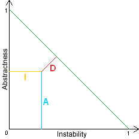
基于上面的原则，HTTL的包结构整体上划分为三层：(对应上面类图中的三列)
- API (Application Programming Interface)
- 模板引擎的使用者依赖的接口类，也是核心领域模型所在，保持最少概念，并隐藏实现细节，其中Engine类相当于微内核，只管理非功能性的扩展点的加载，不硬编码模板加载解析渲染的任何部分。
- SPI (Service Provider Interface)
- 模板引擎的扩展者依赖的接口类，它依赖于API的领域模型，它是模板引擎功能正交分解的抽象层，以保证用户可以最小粒度替换需要改写的地方，方便二次开发。
- BUILT-IN (Built-in Implementation)
- 内置扩展实现，它是SPI标准实现，也是可被用户替换的类，它包含引擎所有做的事，包括扩展点之间的组装过程(可替换DefaultEngine)，以确保没有功能换不掉，即平等对待扩展者。
采用子包依赖父包风格，所以将API放在根目录，SPI接口独立子包，各种实现放在SPI的下一级子包中。
- 使用者API导入：import httl.*;
- 扩展者SPI导入：import httl.spi.*;
下图是HTTL所有包的不稳定度与抽象度的比值距阵：(下图为JDepend绘制)
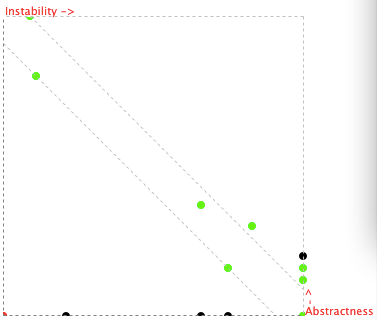
HTTL所有核心包都是靠近反比线的，即上图中用绿色标识的点，表示分包是合理的。
注：图中黑色的点为util相关包，它们不抽象，却被很多包依赖，只是内部复用代码，不影响整体设计，用户请不要依赖HTTL的util类。
调用过程
如果你要看代码，可以从入口类Engine和DefaultEngine开始，按此调用过程跟踪。
执行过程说明：(与上图中的序号对应)
1 当从引擎中获取模板时，
2.1 首先会在缓存查找是否已缓存，如果有缓存就直接返回，
2.2 如果没有，则加载模板，
2.3 接着进行模板语法解析，
2.3.1 在解析到表达式时，将其转译为Java表达式，
2.3.2 并对静态文本进行编译前过滤，比如删除空白等，
2.3.3 对解析后的Java代码进行编译，得到具体模板实现类，
2.3.4 实例化模板实现类，
2.4 将模板实例写入缓存，并返回给用户，
2 当用户调用模板的渲染方法时，
2.1 如果是静态文本直接输出，
2.2 如果是动态变量内容，先将其格式化成字符串，
2.3 再进行过滤，比如转义动态内容的HTML特殊符，
2.4 然后输出过滤后的内容。
性能
性能对比

性能测试类：BenchmarkTest.java
| 引擎 | 模板 | 十万次耗时 | 每秒次数 |
| java | books.java | 8,739ms | 11,442/s |
| httl | books.httl | 9,608ms | 10,407/s |
| velocity | books.vm | 41,969ms | 2,382/s | freemarker | books.ftl | 56,192ms | 1,779/s |
| smarty4j | books.st | 65,855ms | 1,518/s |
环境：os: Mac OS X 10.8.2, cpu: 2 x 1.70GHz, mem: 4G, jvm: 1.7.0_09 -> mem: 80M
HTTL的速度接近于直接用Java硬编码输出，比其它模板引擎高一个数量级。
HTTL用到的JDK的Compiler，编译一个类通常需要几百毫秒，比其它模板的编译要慢，但每个模板只在加载时编译一次。
以上测试，不包含HTTL在编译期将静态文本转成byte[]，以减少输出时重复转码的优化。 全部采用忽略输出的方式进行测试，测的是模板引擎纯渲染时间，否则HTTL将更快。 如果要测试该优化项，不能忽略输出时的编码开销，否则将不公平。
另外，HTTL缺省开启了EscapeXmlFilter，而其它模板引擎没有，为了公平，性能测试时配置关闭了Filter:
value.filter=null
注：不同环境的运行结果可能存在差异，以上测试数据仅供参考，你可以在自己的机器上执行测试：
git clone https://github.com/httl/httl-benchmark.git cd httl-benchmark mvn test -Dtest=httl.test.BenchmarkTest -Dcount=10000
执行结果如：
Running httl.test.BenchmarkTest
====================test environment=====================
os: Mac OS X 10.8.2 x86_64, cpu: 4 cores, jvm: 1.6.0_37,
mem: max: 505M, total: 125M, free: 110M, use: 15M
====================test parameters======================
count: 10000, warm: 100, list: 100, stream: false,
engines: java,httl,velocity,freemarker,smarty4j,beetl
====================test result==========================
engine, time, tps, rate,
java, 690ms, 14492/s, 100%,
httl, 785ms, 12738/s, 87%,
velocity, 3828ms, 2612/s, 18%,
freemarker, 6489ms, 1541/s, 10%,
smarty4j, 6181ms, 1617/s, 11%,
beetl, 9642ms, 1037/s, 7%,
=========================================================优化策略
强类型编译
强类型编译，并推导关联类型
对于表达式${user.name}的编译：
弱类型字节码生成：
Object user = context.get("user"); // 无法确定user是Map还是POJO
// 反射获取属性的值，而且要运行期判断是user.getName()，还是user.name字段
Object name = ReflectUtil.get(user, "name"); // 接下来name也要反射
HTTL强类型字节码生成：
User user = (User)context.get("user"); // 通过<!--#var(User user)-->声明类型
// 在编译期决定使用getName()方法获取属性的值，并通过getUser()的返回类型推演name的类型
String name = user.getName();
预编译字节流
编译时就将文本编译成字节，加快输出
文本编译：
writer.write("<table><tr><td>");
writer.write(user.getName());
二进制编译：
private static final byte[] _B1_ = new byte[] {60, 116, 97, 98, 108, 101, 62, 60, 116, 114, 62, 60, 116, 100, 62};
output.write(_B1_);
output.write(user.getName().getBytes());
这样可以大幅度降低IO输出时将文本通过字符集编码成二进制流的速度，否则一个页面被渲染一亿次，上面的静态文本就要被编码一亿次。
HTTL缺省每模板同时生成两份class，在用户传入OutputStream和Writer时，执行不同的class：
template.render(paramaters, outputStream); // 内部将执行二进制输出版本的Template类 template.render(paramaters, writer); // 内部将执行文本输出版本的Template类
本地局部变量
对于赋值生成局部变量，不put回参数map
比如将：
<!--#var(price = price * discount / 100)-->
${price}
编译成：
int price = price * discount / 100; write(price);
而不是：
context.put("price", price * discount / 100);
write(context.get("price"));
这样可以大量减少参数map的put和get的调用，减少hash查找的时间。
字节码不含字符串
将文本不编译到字节码中，减少内存perm区占用，以及防止JIT失效
当模板的内容较大时，会导致生成的字节码也比较大，字节码运行时会放在内存perm区，导致perm区过大。 模板多时，用户可能需要不断调大perm区：java -XX:PermSize=256MB -XX:MaxPermSize=256MB
另外，SunJDK缺省对大于8K字节码的方法不进行JIT优化，我们常规开启的JVM是mixed模式的， 即调用量大的，将由JIT编译成本地码运行，其它在JVM内解释执行，解释执行和编译执行的速度相差10倍以上。 参见JVM的：globals.hpp
product(bool, DontCompileHugeMethods, true,
"don't compile methods > HugeMethodLimit")
develop(intx, HugeMethodLimit, 8000,
"don't compile methods larger than this if +DontCompileHugeMethods")
通过将文本不编译到字节码中，减少内存perm区占用，也能防止JIT失效。
将：
// 如果这个串有8K以上，就会导致生成的字节码超过8K
writer.write("...A Large String...");
改成：
// 在生成字节码前，将文本内容存到一个Map缓存中，
// 在生成的类加载时，类的静态字段从缓存中读取值，并删除缓存，
// 这样文本内容，就从字节码存储的Perm区，转到了常量对象存储的Old区，
// 因为是静态字段，所以不会影响模板执行性能。
private static final String _TXT1_ = StringCache.getAndRemove("1");
writer.write(_TXT1_);
快速文本处理
减少反射调用，无用锁，基本类型装箱，以及文本处理。
反射经常是性能瓶颈所在，HTTL对所有反射调用的地方都很非常小心， 比如：因为int[]不继承于Object[]，为了通用处理，改为Array.get(array, index)来获取数组的项， 导致在Profiler分析时，发现80%的CPU时间都耗在Array.get()上。
因为模板输出的大量是基本类型和字符串，Httl遇到任何类似需要boxed和unboxed的地方， 都会重载所有基本类型方法，以减少boxed和unboxed的处理。 比如：当输出基本类型时，需要转成String，如果使用format(Object)接口，就会将基本类型装箱。
JDK6加入的Biased Locking优化是有开销和不稳定性的， 所以程序中无用的锁是可能影响性能的，HTTL会主动规避JDK中的无用锁， 比如：覆盖方法去掉Writer,ByteArrayOutputStream等的锁。
文本处理也是经常出现性能瓶颈的地方，HTTL极尽小心的处理文本。 比如：正则表达式的贪婪模式，StringBuilder扩容导致数组拷贝，过滤字符串没有替换时不做append操作等。
等等。一切影响性能的细节，持续关注和优化中。
质量
单元测试
单元测试覆盖率: (分析工具EclEmma)

HTTL对所有语法，指令，函数，都有相应模板进行测试，参见：
https://github.com/httl/httl/tree/master/src/test/resources/comment/templates
FindBugs检测
已通过FindBugs最新版本(2.0.2)检测，零发现。参见：FindBugs能发现的问题
JDepend检测
已通过JDepend检测检测，无环依赖，稳定度与抽象度比正常。
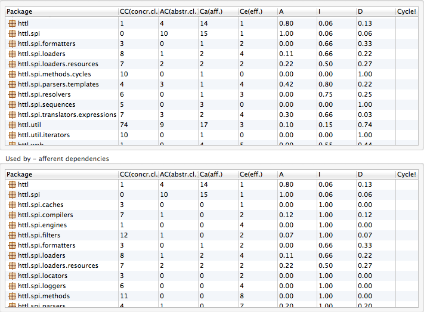
稳定性测试
在长时间重复运行所有单元测试后，CPU保持平稳：(分析工具JVisualVM)
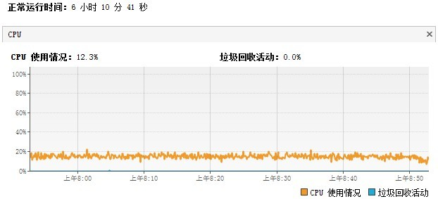
内存也保持平稳，以YoungGC为主：
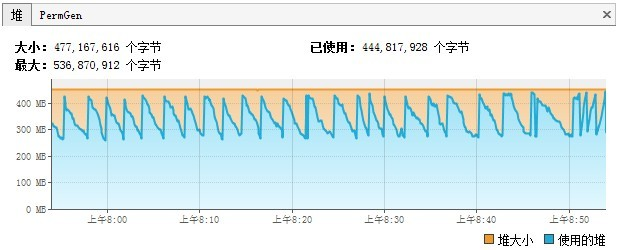
虽然HTTL大量使用字节码生成以提升性能，但因为有全量缓存，Perm区也是稳定的：
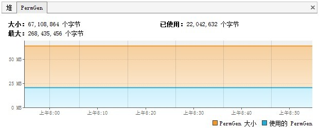
因设置的内存只有500M，而常规已占400多M，在OLD区几乎快满情况下，也只发生3次FullGC：(分析工具jstat)
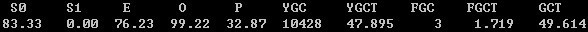
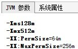
从下面Dump后的数据可以看出，JDK编译占用了171M内存。如果开启-Xlint:unchecked编译参数会更大。 如果你觉得JdkCompiler内存占用过多，也可以通过配置换成Javassist编译。(分析工具jmap + MAT)
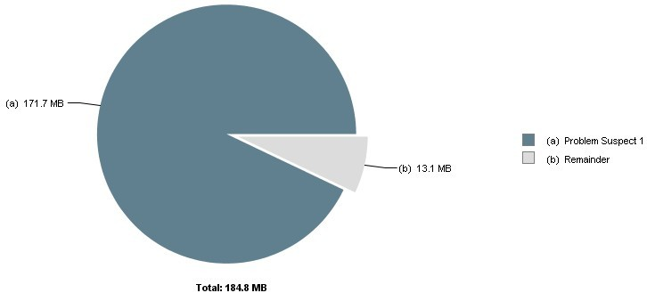
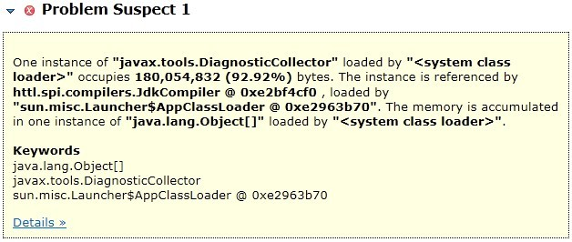
Profile分析
CPU分析
测试用例为长时间跑模板渲染过程，因解析后有缓存，所以CPU几乎全耗在渲染过程， 解析过程占比较小，符合预期：(分析工具JProfiler)
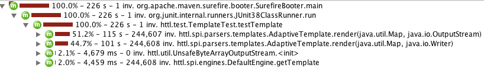
因同时测试了Writer和OutputStream两种场景，所以上图中各分一半。
展开其中一个渲染过程，各模板比较均匀，占比都不大，没有出现绝对热点，符合预期：
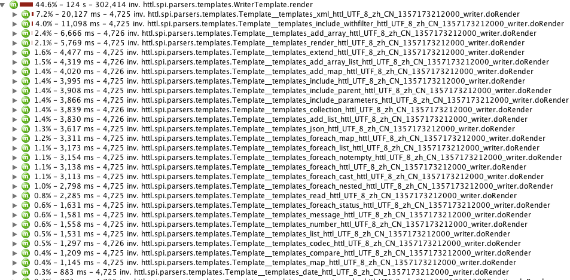
从上图可以看上，相对而言，xml.httl和include_withfilter.httl较慢，展开如下：
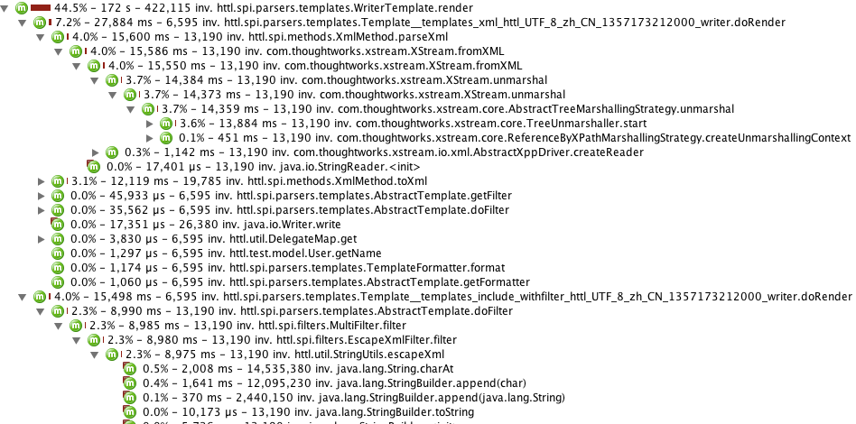
可以看出，主要消耗在xstream的parseXml解析和filter的escapseXml转义上。
XML的解析和处理本身就很耗时，在可接受范围内，并且不是核心组件。
长时间运行后，因样本少，xstream解析数据被缓存，所以时间都集中到了escapseXml的charAt上。
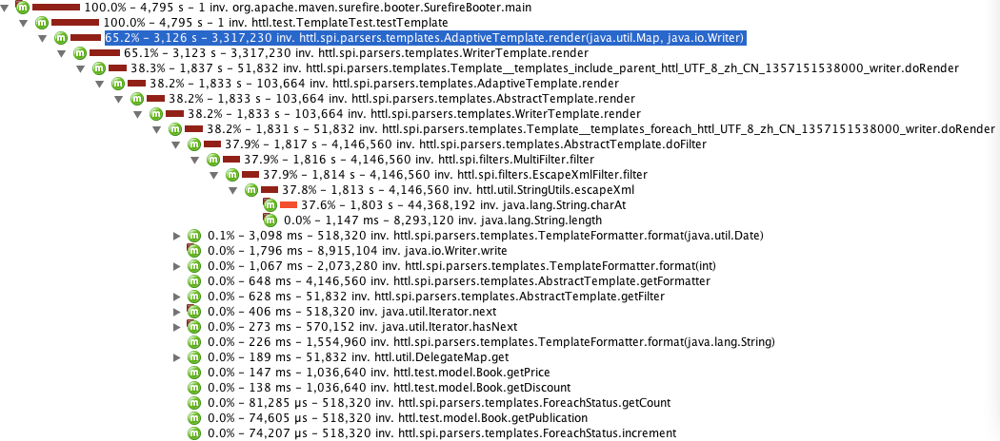
注意，上面的图中，浅红色表示当前方法消耗，深红色表示子函数消耗总和。
即然占比如此大，我们来看下代码：
首先String.charAt只是一个char[]下标取值，已经足够简单，不存在性能问题：
public char charAt(int index) {
if ((index < 0) || (index >= count))
throw new StringIndexOutOfBoundsException(index);
return value[index + offset];
}
那再来看看HTTL的escapseXml：
public static String escapeXml(String value) {
if (value == null || value.length() == 0) {
return value;
}
int len = value.length();
StringBuilder buf = null;
for (int i = 0; i < len; i ++) {
char ch = value.charAt(i);
switch (ch) {
case '&':
if (buf == null) {
buf = new StringBuilder(len * 2);
if(i > 0) {
buf.append(value.substring(0, i));
}
}
buf.append("&");
break;
case '<':
if (buf == null) {
buf = new StringBuilder(len * 2);
if(i > 0) {
buf.append(value.substring(0, i));
}
}
buf.append("<");
break;
case '>':
if (buf == null) {
buf = new StringBuilder(len * 2);
if(i > 0) {
buf.append(value.substring(0, i));
}
}
buf.append(">");
break;
case '\"':
if (buf == null) {
buf = new StringBuilder(len * 2);
if(i > 0) {
buf.append(value.substring(0, i));
}
}
buf.append(""");
break;
case '\'':
if (buf == null) {
buf = new StringBuilder(len * 2);
if(i > 0) {
buf.append(value.substring(0, i));
}
}
buf.append("'");
break;
default:
if (buf != null) {
buf.append(ch);
}
break;
}
}
if (buf != null) {
return buf.toString();
}
return value;
}
从代码中可以看出escapseXml已经做了一些优化：
- 在没有发现特殊符前，不创建StringBuilder对象。
- 在发现第一个特殊符时，将将之前的内容，一次性拷到StringBuilder中。
- StringBuilder对象以两倍长度创建，防止扩容带来数据迁移。
- 通过switch每字符，以最短路径分发处理逻辑。
因escapseXml在没有发现特殊符时，只是通过charAt遍历字符串，不会做其它动作， 所以长时间运行后，会显得charAt比较热，要过滤至少要遍历一遍，这已经是最低复杂度，所以并不是什么问题。
在压测Apache开源commons-lang中的StringEscapeUtils中的escapeXml后，发现性能甚至不如HTTL的实现。
那也看下commons-lang的StringEscapeUtils源代码：(注释中有说明它慢的原因)
public static String escapeXml(String str) {
if (str == null) {
return null;
}
return Entities.XML.escape(str);
}
public String escape(String str) {
// 这里总是创建StringWriter，如果str没有特殊符，这样首先会浪费创建Writer对象的成本。
// 其次浪费将一个个字符写到writer中，再toString回来的大量性能，而且没有特殊符是大概率事件。
// HTTL在没有特殊符时是直接返回原始串的，不创建任何对象，不做任何来回拷贝。
// 另外，StringWriter里面封装的StringBuffer，它的所有方法是带同步锁的，而HTTL采用无锁的StringBuilder。
StringWriter stringWriter = createStringWriter(str);
try {
this.escape(stringWriter, str);
} catch (IOException e) {
throw new UnhandledException(e);
}
return stringWriter.toString();
}
public void escape(Writer writer, String str) throws IOException {
int len = str.length();
for (int i = 0; i < len; i++) {
char c = str.charAt(i);
// 这里使用map的hash查找实体的名称，比HTTL的switch慢。
String entityName = this.entityName(c);
if (entityName == null) {
if (c > 0x7F) {
writer.write("&#");
writer.write(Integer.toString(c, 10));
writer.write(';');
} else {
writer.write(c);
}
} else {
writer.write('&');
writer.write(entityName);
writer.write(';');
}
}
}
当然，如果你有更好的实现，欢迎提供，非常感谢。
你可以通过配置切换实现：
value.filters=com.your.YourEscapeXmlFilter
内存分析
内存中以char[]和String最多，因为模板本身是大量文本处理，符合预期：(分析工具JProfiler)
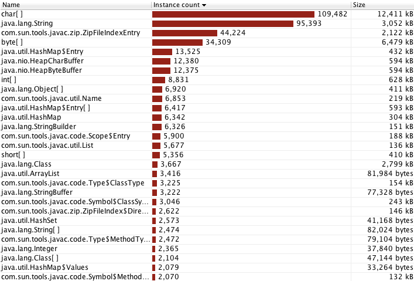
过滤HTTL自身的类，因Context为会话域模型，每次执行都会创建Context，所以Context类最多，它比较轻量，符合预期：
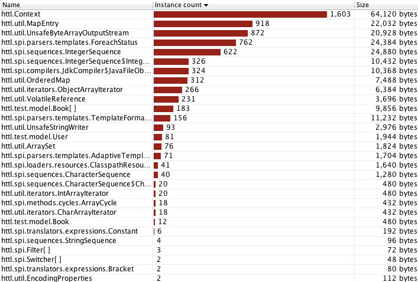
长时间运行后，Context等实例数保持稳定，并没有爆炸式增长，表示可有效回收，符合预期：
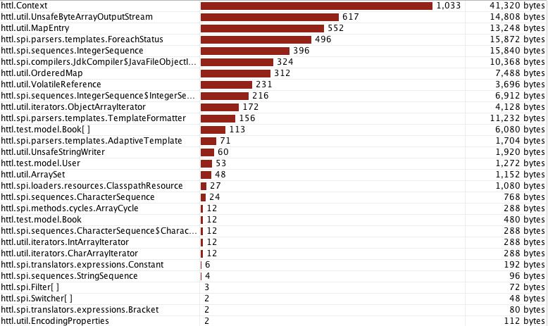

{kind=link}
{kind=link}